Explore ACTIVE rotations applied to a BODY-FIXED frame
Bradley Horton : 01-Mar-2016, bradley.horton@mathworks.com.au
Contents
Introduction:
An ACTIVE rotation matrix, moves a point initially defined in it's local B-frame, to a new location. This new data point is expressed in the co-ordinates of the G-frame
An example of this concept is shown below

Recall our discussion on PASSIVE rotations
Say we start with a G-frame. We're going to apply 3 LOCAL axes rotations which will result in a newly orientated frame called the B-frame.
Assume that we apply these 3 successive rotations in the following order:
- R1Z occurs 1st about the LOCAL Z body axis 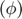, aka YAW
- R2Y occurs 2nd about the LOCAL Y body axis 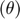, aka PITCH
- R3X occurs 3rd about the LOCAL X body axis 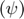, aka ROLL
We can express a vector defined in the G axis into it's corresponding description in the B axis, using a PASSIVE rotation matrix, ie:
vB = R3X(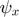) * R2Y(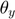) * R1Z(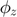) * vG
OR, in a more compact form as:
vB = bRg * vG
Now define what we mean by ACTIVE rotations
Continuing on from the previous section, we can now write:
vG = 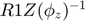 * 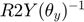 * 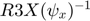 * vB
vG = 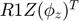 * 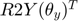 * 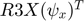 * vB
vG = 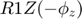 * 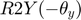 * 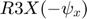 * vB
If we now define the following ACTIVE rotation matrices:
- a_R1Z() = =
- a_R2Y() = =
- a_R3X() = =
Then we can write:
vG = a_R1Z() * a_R2Y() * a_R3() * vB
Or in a more compact form:
vG = gRb * vB
where it should be clear that:
gRb == 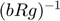 == 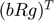
Define some geometry(co-ordinates) of a vehicle
% this will be the "toy" system that we'll rotate in space
veh_OBJ = bh_vehicle_CLS()
veh_OBJ =
bh_vehicle_CLS with properties:
FaceAlpha: 1
gRb: [3x3 double]
XL: [-2 2]
YL: [-2 2]
ZL: [-2 2]
X_b_col: [18x1 double]
Y_b_col: [18x1 double]
Z_b_col: [18x1 double]
X_g_col: [18x1 double]
Y_g_col: [18x1 double]
Z_g_col: [18x1 double]
Show the vehicle in it's original pose
figure(); hax(1) = subplot(2,2,1); veh_OBJ.plot_3D(hax(1)); hax(2) = subplot(2,2,2); veh_OBJ.plot_XY(hax(2)); hax(3) = subplot(2,2,3); veh_OBJ.plot_XZ(hax(3)); hax(4) = subplot(2,2,4); veh_OBJ.plot_YZ(hax(4));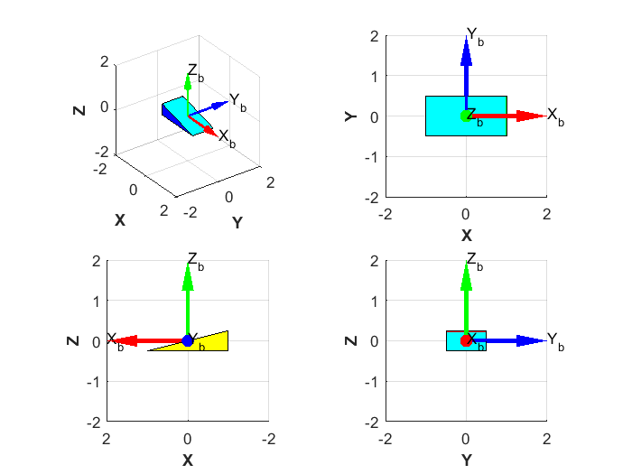
Define the ACTIVE rotation sequence and ANIMATE
We'd like to subject the vehicle to a series of rotations applied to a body fixed co-ordinate frame attached to the vehicle.
Assume that we apply these 3 successive rotations in the following order:
- R1Z occurs 1st about the LOCAL Z body axis , aka YAW
- R2Y occurs 2nd about the LOCAL Y body axis , aka PITCH
- R3X occurs 3rd about the LOCAL X body axis , aka ROLL
degs_yaw = 90;
degs_pitch= 30;
degs_roll = 60;
arot_OBJ = bh_rot_active_B2G_CLS({'D1Z','D2Y','D3X'}, ...
[degs_yaw, degs_pitch, degs_roll], ...
'DEGREES');
desc_str = arot_OBJ.get_description();
% Let's ANIMATE
figure();
hax = axes;
veh_OBJ = veh_OBJ.rotate_and_animate(arot_OBJ, hax);
title(hax, desc_str);
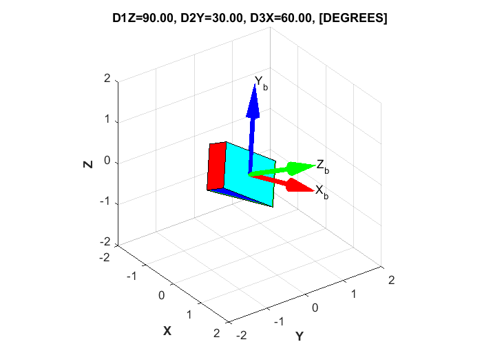 Example #2: Define the ACTIVE rotation sequence and ANIMATE
We'd like to subject the vehicle to a series of rotations applied to a body fixed co-ordinate frame attached to the vehicle.
Assume that we apply these 3 successive rotations in the following order:
- R1X occurs 1st about the LOCAL X body axis , aka ROLL
- R2Z occurs 2nd about the LOCAL Z body axis , aka YAW
- R3Y occurs 3rd about the LOCAL Y body axis , aka PITCH
degs_roll = 45;
degs_yaw = 90;
degs_pitch= 70;
arot_OBJ = bh_rot_active_B2G_CLS({'D1X', 'D2Z', 'D3Y'}, ...
[degs_roll, degs_yaw, degs_pitch], ...
'DEGREES');
desc_str = arot_OBJ.get_description();
% Let's ANIMATE
figure();
hax = axes;
veh_OBJ = veh_OBJ.rotate_and_animate(arot_OBJ, hax);
title(hax, desc_str);
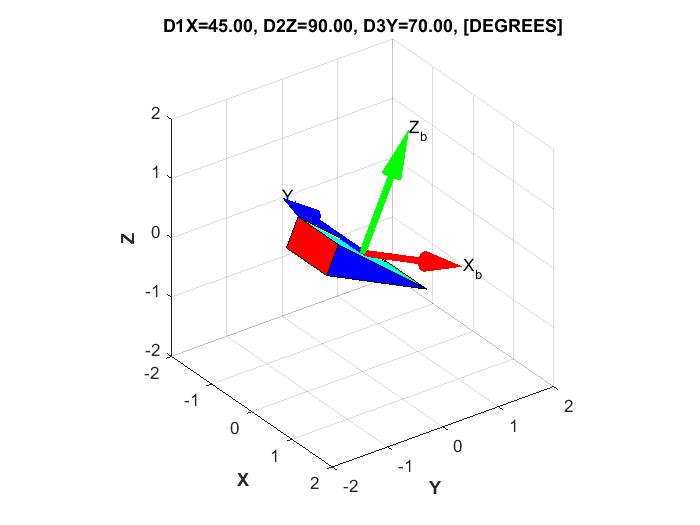